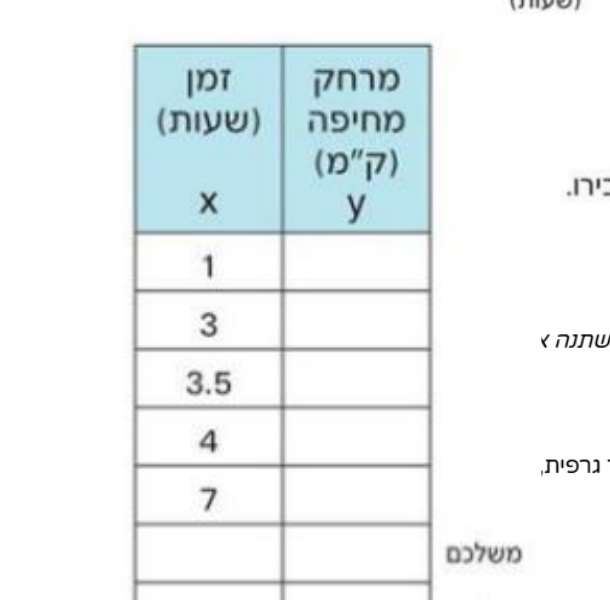

שאלה 6 - משאית מחיפה
ניתוח גרף מרחק-זמן
משאית יצאה מחיפה. במהלך הנסיעה עצרה פעמיים.
הגרף שלפניכם מתאר את המרחק מחיפה בהתאם לזמן שעבר מתחילת הנסיעה.
הגרף שלפניכם מתאר את המרחק מחיפה בהתאם לזמן שעבר מתחילת הנסיעה.
הגרף

הטבלה
ב. באילו פרקי זמן לא נסעה המשאית? הסבירו.
בחרו את התשובה הנכונה:
ג. האם חזרה המשאית לחיפה? הסבירו.
בחרו את התשובה הנכונה:
ד. מה היה המרחק המרבי שלה מחיפה במהלך הנסיעה?
בחרו את התשובה הנכונה:
ה. האם ייתכן שבשני זמנים שונים היה אותו מרחק מחיפה?
בחרו את התשובה הנכונה:
ו. האם y (המרחק) הוא פונקציה חד-חד-ערכית של x (הזמן)?
בחרו את התשובה הנכונה:
תזכורת: פונקציה חד-חד-ערכית היא פונקציה שבה לכל ערך y מתאים לכל היותר ערך x אחד.
במילים אחרות: כל קו אופקי חותך את הגרף לכל היותר בנקודה אחת.